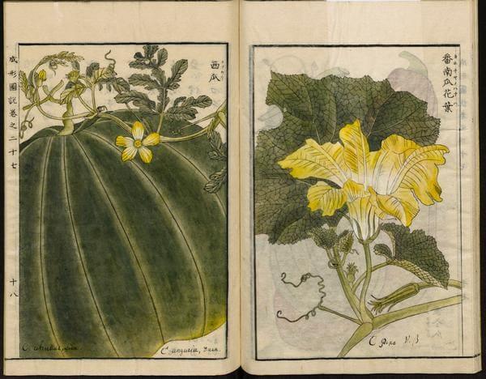

The watermelon is an annual that has a prostrate or climbing habit. Stems are up to 3 metres (10 feet) long and new growth has yellow or brown hairs. Leaves are 60 to 200 millimetres (2+1⁄4 to 7+3⁄4 inches) long and 40 to 150 mm (1+1⁄2 to 6 in) wide. These usually have three lobes that are lobed or doubly lobed. Young growth is densely woolly with yellowish-brown hairs which disappear as the plant ages. Like all but one species in the genus Citrullus, watermelon has branching tendrils. Plants have unisexual male or female flowers that are white or yellow and borne on 40-millimetre-long (1+1⁄2 in) hairy stalks. Each flower grows singly in the leaf axils, and the species' sexual system, with male and female flowers produced on each plant, is (monoecious). The male flowers predominate at the beginning of the season; the female flowers, which develop later, have inferior ovaries. The styles are united into a single column.
The large fruit is a kind of modified berry called a pepo with a thick rind (exocarp) and fleshy center (mesocarp and endocarp). Wild plants have fruits up to 20 cm (8 in) in diameter, while cultivated varieties may exceed 60 cm (24 in). The rind of the fruit is mid- to dark green and usually mottled or striped, and the flesh, containing numerous pips spread throughout the inside, can be red or pink (most commonly), orange, yellow, green or white.
A bitter watermelon, C. amarus, has become naturalized in semiarid regions of several continents, and is designated as a "pest plant" in parts of Western Australia where they are called "pig melon".
Taxonomy
The sweet watermelon was first described by Carl Linnaeus in 1753 and given the name Cucurbita citrullus. It was reassigned to the genus Citrullus in 1836, under the replacement name Citrullus vulgaris, by the German botanist Heinrich Adolf Schrader. (The International Code of Nomenclature for algae, fungi, and plants does not allow names like "Citrullus citrullus".)
The species is further divided into several varieties, of which bitter wooly melon (Citrullus lanatus (Thunb.) Matsum. & Nakai var. lanatus), citron melons (Citrullus lanatus var. citroides (L. H. Bailey) Mansf.), and the edible var. vulgaris may be the most important. This taxonomy originated with the erroneous synonymization of the wooly melon Citrullus lanatus with the sweet watermelon Citrullus vulgaris by L.H. Bailey in 1930. Molecular data including sequences from the original collection of Thunberg and other relevant type material, show that the sweet watermelon (Citrullus vulgaris Schrad.) and the bitter wooly melon Citrullus lanatus (Thunb.) Matsum. & Nakai are not closely related to each other. A proposal to conserve the name, Citrullus lanatus (Thunb.) Matsum. & Nakai, was accepted by the nomenclature committee and confirmed at the International Botanical Congress in 2017.
The wild species closest to Citrullus lanatus are the tendril-less melon Citrullus ecirrhosus Cogn. from South African arid regions and Citrullus mucosospermus (Fursa) Fursa from West Africa, which is also sometimes considered a subspecies within C. lanatus. Watermelon populations from Sudan are also close to domesticated watermelons . The bitter wooly melon was formally described by Carl Peter Thunberg in 1794 and given the name Momordica lanata. It was reassigned to the genus Citrullus in 1916 by Japanese botanists Jinzō Matsumura and Takenoshin Nakai.
History
The closest living relative of the domesticated modern watermelon, is the kordofan Melon in Sudan where it's thought to have originated, being likley passed on to the pre kerma or kerma cultures where they were domesticated. And from there dispersed northward.

Illustration from the Japanese agricultural encyclopedia Seikei Zusetsu (1804).
Watermelons were cultivated for their high water content and were stored to be eaten during dry seasons, not only as a food source, but as a method of storing water. Watermelon seeds were also found in the Dead Sea region at the ancient settlements of Bab edh-Dhra and Tel Arad.
A number of 5000-year old wild watermelon seeds (C. lanatus) were discovered at Uan Muhuggiag, a prehistoric archaeological site located in southwestern Libya. This archaeobotanical discovery may support the possibility that the plant was more widely distributed in the past.
In the 7th century, watermelons were being cultivated in India, and by the 10th century had reached China, which is, in 2019, the world's single largest watermelon producer. The Moors introduced the fruit into the Iberian Peninsula and there is evidence of it being cultivated in Córdoba in 961 and also in Seville in 1158. It spread northwards through southern Europe, perhaps limited in its advance by summer temperatures being insufficient for good yields. The fruit had begun appearing in European herbals by 1600, and was widely planted in Europe in the 17th century as a minor garden crop.
Early watermelons were not sweet, but bitter, with yellowish-white flesh and difficult to open. Through the process of breeding, watermelons later tasted better and were easier to open.
European colonists and slaves from Africa introduced the watermelon to the New World. Spanish settlers were growing it in Florida in 1576, and it was being grown in Massachusetts by 1629, and by 1650 was being cultivated in Peru, Brazil and Panama. Around the same time, Native Americans were cultivating the crop in the Mississippi valley and Florida. Watermelons were rapidly accepted in Hawaii and other Pacific islands when they were introduced there by explorers such as Captain James Cook. In the Civil War era United States, watermelons were commonly grown by free black people and became one symbol for the abolition of slavery. After the Civil War, black people were maligned for their association with watermelon. The sentiment evolved into a racist stereotype where black people shared a supposed voracious appetite for watermelon, a fruit long correlated with laziness and uncleanliness.
Seedless watermelons were initially developed in 1939 by Japanese scientists who were able to create seedless triploid hybrids which remained rare initially because they did not have sufficient disease resistance. Seedless watermelons became more popular in the 21st century, rising to nearly 85% of total watermelon sales in the United States in 2014.
Cultivation
Watermelons are plants grown in climates from tropical to temperate, needing temperatures higher than about 25 °C (77 °F) to thrive. On a garden scale, seeds are usually sown in pots under cover and transplanted into well-drained sandy loam with a pH between 5.5 and 7, and medium levels of nitrogen.
Major pests of the watermelon include aphids, fruit flies, and root-knot nematodes. In conditions of high humidity, the plants are prone to plant diseases such as powdery mildew and mosaic virus. Some varieties often grown in Japan and other parts of the Far East are susceptible to fusarium wilt. Grafting such varieties onto disease-resistant rootstocks offers protection.
Seedless watermelon.
The US Department of Agriculture recommends using at least one beehive per acre (4,000 m2 per hive) for pollination of conventional, seeded varieties for commercial plantings. Seedless hybrids have sterile pollen. This requires planting pollinizer rows of varieties with viable pollen. Since the supply of viable pollen is reduced and pollination is much more critical in producing the seedless variety, the recommended number of hives per acre (pollinator density) increases to three hives per acre (1,300 m2 per hive). Watermelons have a longer growing period than other melons, and can often take 85 days or more from the time of transplanting for the fruit to mature. Lack of pollen is thought to contribute to "hollow heart" which causes the flesh of the watermelon to develop a large hole, sometimes in an intricate, symmetric shape. Watermelons suffering from hollow heart are safe to consume.
Farmers of the Zentsuji region of Japan found a way to grow cubic watermelons by growing the fruits in metal and glass boxes and making them assume the shape of the receptacle. The cubic shape was originally designed to make the melons easier to stack and store, but these "square watermelons" may be triple the price of normal ones, so appeal mainly to wealthy urban consumers. Pyramid-shaped watermelons have also been developed and any polyhedral shape may potentially be used.